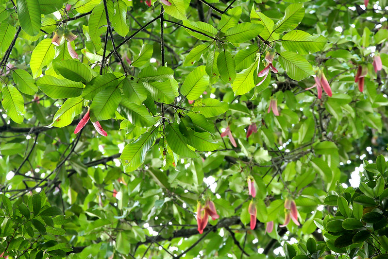
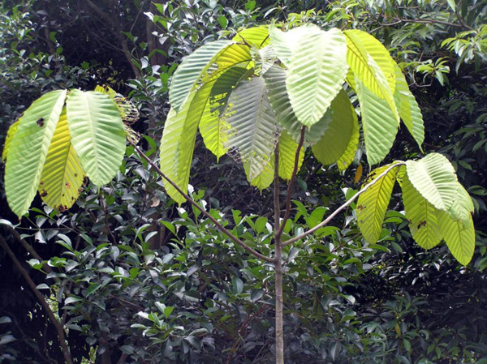
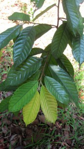
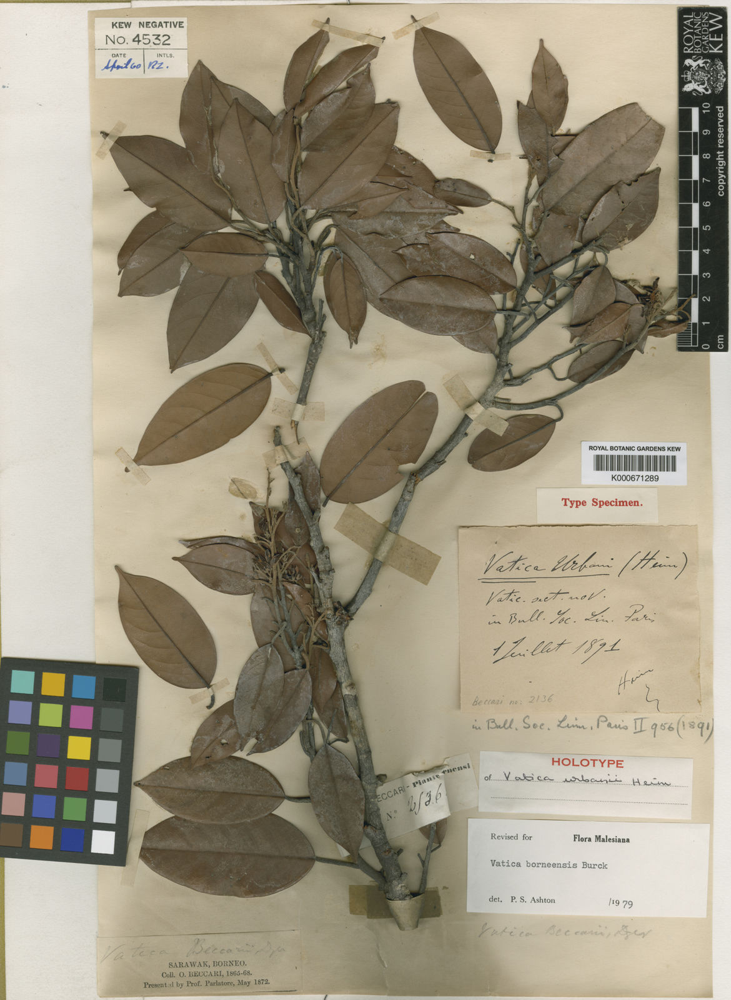
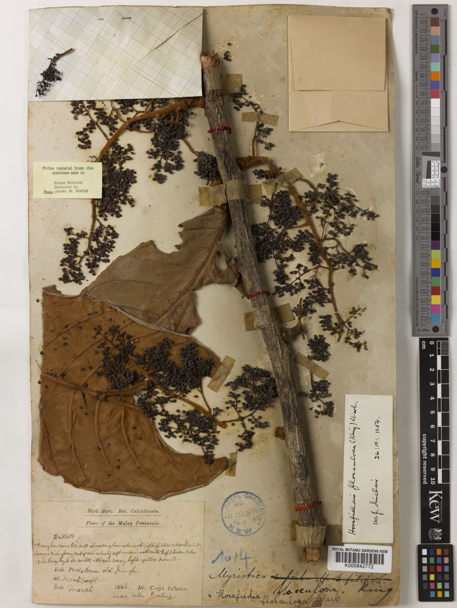
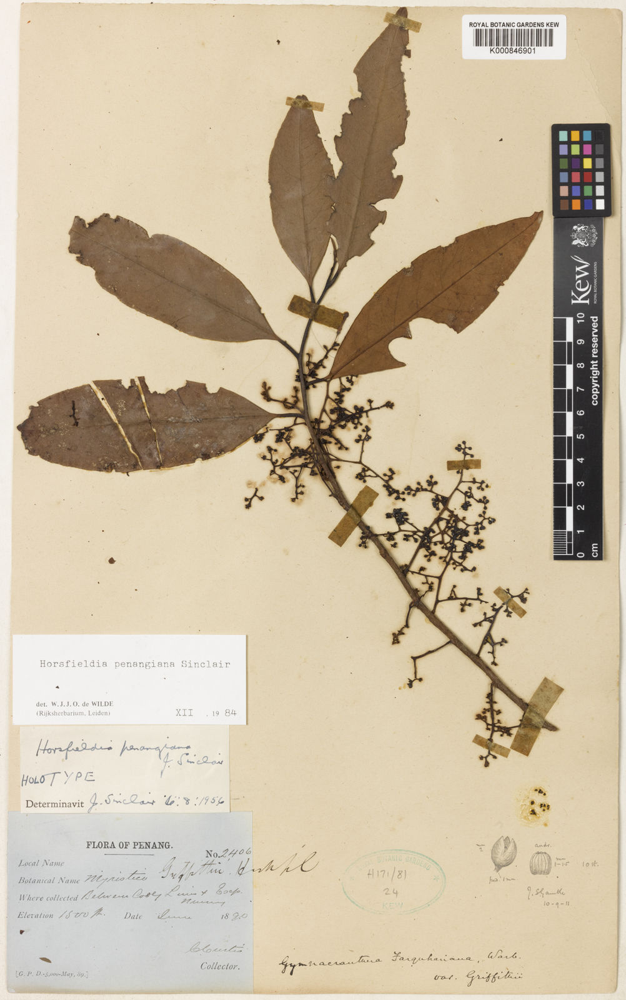
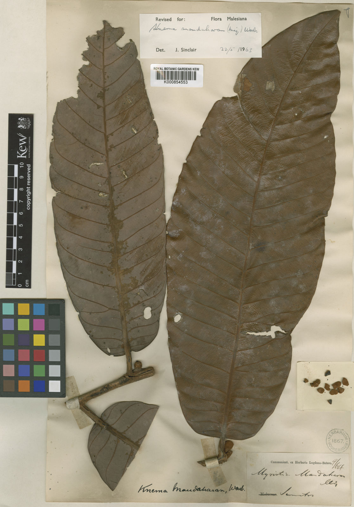
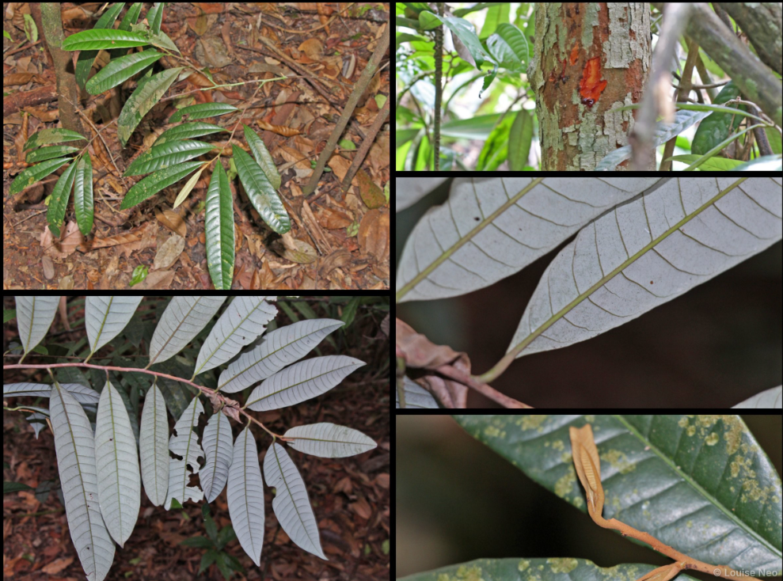
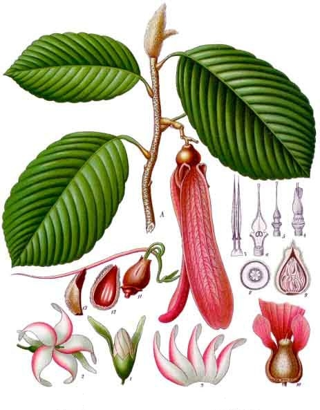
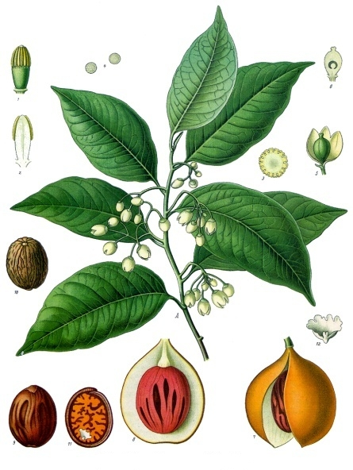

Sources behind the site
Acknowledgements
Plant references, image credits, design inspiration and the HTML/CSS techniques used in MY Plant Watch.
Photographs and illustrations
These credits also cover reuse in the homepage, Explorer, contributor cards and example observations. Specimen images are credited to their scientific collections; the contributor names in the demonstration data are not the photographers.
| Preview | Image and use | Source / credit |
|---|---|---|

|
Dipterocarpus grandiflorus | loupok / iNaturalist |
|
 |
Dipterocarpus grandiflorus — family example | loupok / iNaturalist |
|
 |
Dipterocarpus kunstleri | Rimbun Dahan |
|
 |
Vatica flavida | Rimbun Dahan |
|
 |
Vatica borneensis — herbarium sheet | Royal Botanic Gardens, Kew |
|
 |
Horsfieldia flocculosa — herbarium sheet | Royal Botanic Gardens, Kew |
|
 |
Horsfieldia penangiana — herbarium sheet | Royal Botanic Gardens, Kew |
|
 |
Knema mandaharan — herbarium sheet | Royal Botanic Gardens, Kew |
|
 |
Knema communis — botanical photographs | Biodiversity of Singapore; supplied image source record |
|
 |
Dipterocarpus retusus — botanical illustration | Köhler’s Medizinal-Pflanzen / Wikimedia Commons |
|
 |
Myristica fragrans — botanical illustration | Köhler’s Medizinal-Pflanzen / Wikimedia Commons |

|
Anisoptera scaphula — hero background | Md. Sharif Hossain Sourav / Wikimedia Commons |

|
Nepenthes rajah — hero background | Wikimedia Commons contributors |

|
Paphiopedilum rothschildianum — hero background | Wikimedia Commons contributors |

|
Dipterocarpus grandiflorus — hero illustration | Flora de Filipinas / Wikimedia Commons |


Logo design reference: MY Plant Watch logo — Canva design I made this in canva.
Plant information and classification
Scientific names, native ranges and family relationships refer to Royal Botanic Gardens, Kew’s Plants of the World Online. The classification explanation uses Kew’s educational taxonomy guide. The assignment brief, case study and PlantsData supplied for COS10005 informed the website’s scope.
- Royal Botanic Gardens, Kew — Tree of life taxonomy guide
- Plants of the World Online — Dipterocarpaceae
- Plants of the World Online — Dipterocarpus
- Plants of the World Online — Myristicaceae
- Plants of the World Online — Horsfieldia
- Plants of the World Online — Horsfieldia flocculosa
- Plants of the World Online — Horsfieldia penangiana
- Plants of the World Online — Knema communis
- Plants of the World Online — Vatica
- Plants of the World Online — Knema
- Plants of the World Online — Dipterocarpus grandiflorus
- Plants of the World Online — Dipterocarpus kunstleri
- Plants of the World Online — Vatica borneensis
- Plants of the World Online — Vatica flavida
- Plants of the World Online — Knema mandaharan
Community names, observations and comments are example content for this student website, not verified field records.
HTML and CSS references
These references explain the techniques used in the current implementation. They are documentation references, not claims that a complete template was copied.
- CSS animations and keyframes — MDN Web Docs : Timed hero backgrounds and coordinated collage descriptions.
- The :has() selector — MDN Web Docs : Connects hover and focus states to related content.
- HTML details and summary — MDN Web Docs : Native expandable mobile navigation.
- CSS position — MDN Web Docs : Sticky site navigation and form guide.
- CSS invalid state — MDN Web Docs : Input-specific form error messages.
- Media queries — MDN Web Docs : Responsive layouts and reduced-motion preferences.
- CSS object-fit — MDN Web Docs : Shows complete plant images without cropping their edges.
- CSS scroll snap — MDN Web Docs : The horizontally scrollable contribution gallery.
See exactly where each enhancement is used and how to test it.
Design inspiration
- Hotel Landing Page — uwithumlaut, 99designs : the reference for the asymmetric homepage image collage.